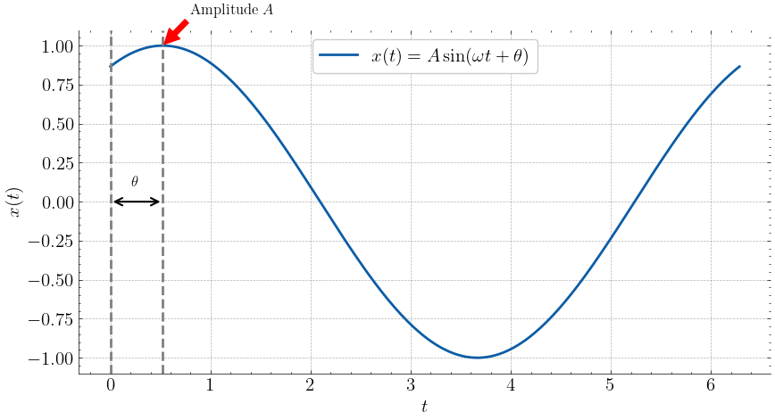
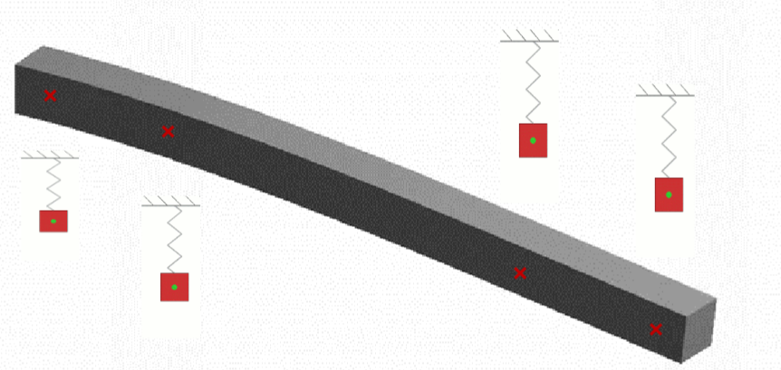
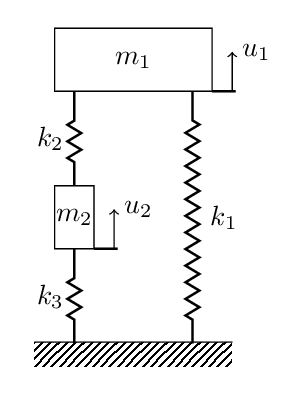
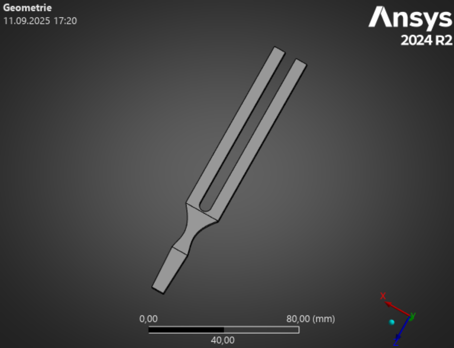
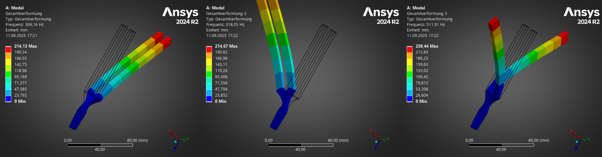
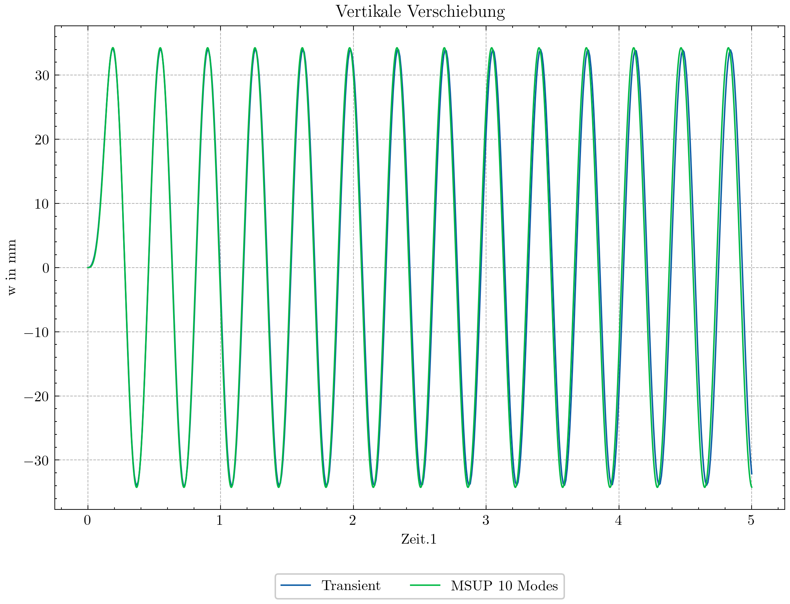
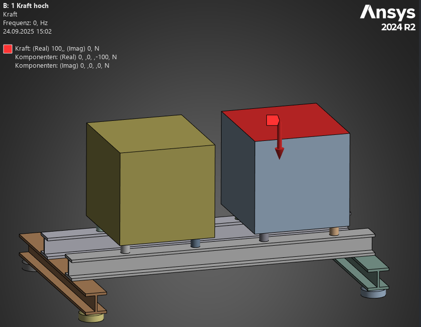
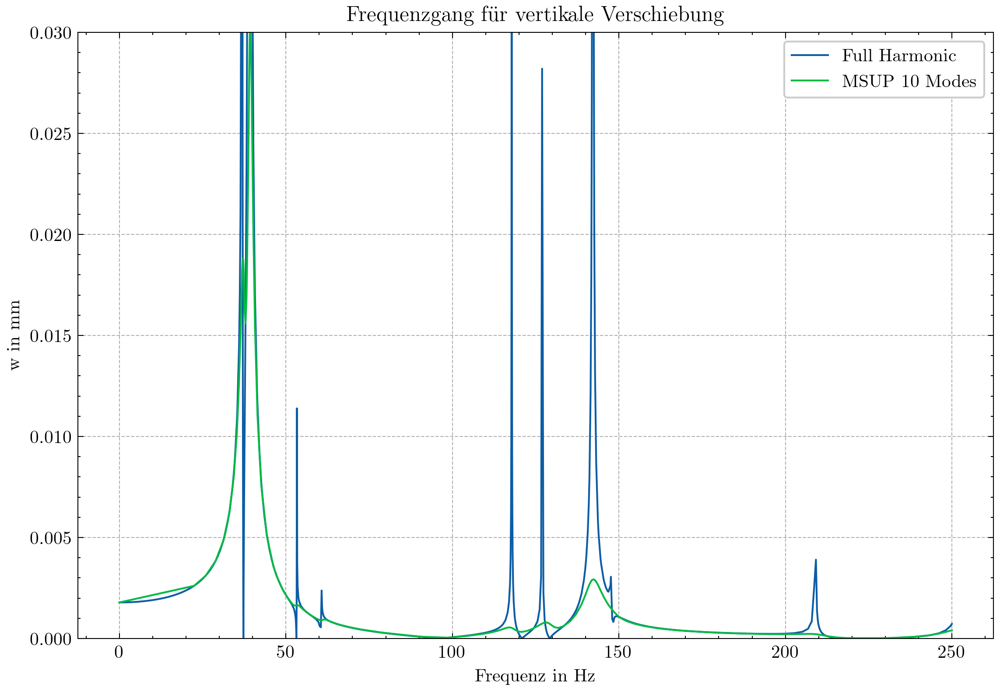

17. Modalanalysen#
Die Modalanalyse beschäftigt sich mit den Eigenschwingungen eines mechanischen Systems. Das Ziel der Modalanalyse ist es, die Eigenfrequenzen und Eigenformen (Eigenmoden) des Systems zu berechnen. Wichtig ist es an dieser Stelle darauf hinzuweisen, dass alle hier beschriebenen Methoden nur für lineare Systeme gelten.
{kind=link}
Abb. 17.1 Eigenschwingungen der Takoma Bridge bis zum Versagen. wikipedia#
Grundlage für die Modalanalyse ist die Impulsbilanz (Bewegungsgleichung) (15.2):
Als Unbekannte für die Bewegungsgleichung sind für alle Punkte \(\bm{x}\) im Raum und das betrachtete Zeitinterval \([t_0, t_1]\) die Verschiebungen \(\bm{u}(\bm{x}, t)\), die Geschwindigkeiten \(\dot{\bm{u}}(\bm{x}, t)\) und die Beschleunigungen \(\ddot{\bm{u}}(\bm{x}, t)\) gesucht.
Bei der Modalanalyse wird davon ausgegangen, dass die Lösung der Impulsbilanz (15.2) eine harmonische Funktion ist:
Die Lösung \(\bm{u}\) der Impulsbilanz wird folglich interpretiert wie ein 1D-Massenschwinger unter einer harmonischen Anregung.

Abb. 17.2 Eindimensionaler Feder-Massenschwinger mit Dämpfung.#
Show code cell source
import numpy as np
import matplotlib.pyplot as plt
from matplotlib.patches import Circle
import scienceplots
# Set up the plot configurations.
plt.style.use(['science', 'grid'])
plt.rcParams['lines.linewidth'] = 2.0
plt.rcParams['lines.color'] = 'black'
plt.rcParams['legend.frameon'] = True
plt.rcParams['figure.figsize'] = (8, 6)
plt.rcParams['font.family'] = 'serif'
plt.rcParams['legend.fontsize'] = 15
plt.rcParams['font.size'] = 15
plt.rcParams['axes.spines.right'] = False
plt.rcParams['axes.spines.top'] = False
plt.rcParams['axes.spines.left'] = True
plt.rcParams['axes.spines.bottom'] = True
plt.rcParams['axes.axisbelow'] = True
plt.rcParams['grid.color'] = 'grey'
plt.rcParams['grid.alpha'] = 0.6
plt.rcParams['grid.linestyle'] = '--'
t = np.linspace(0, 2*np.pi, 200)
A = 1
omega = 1
phi = np.pi/3
fig,ax = plt.subplots(1,1,figsize=(10,5));
ax.plot(t, A*np.sin(omega*t+phi), label=r'$x(t) = A \sin(\omega t + \theta)$'),
ax.set_xlabel(r'$t$');
ax.set_ylabel(r'$x(t)$');
ax.legend();
ax.annotate(r'Amplitude $A$', xy=(-phi + 0.5*np.pi*omega, A), xytext=(0.8, 1.2*A),
arrowprops=dict(facecolor='red',edgecolor='red', shrink=0.05), fontsize=12);
ax.axvline(0, color='grey', linestyle='--')
ax.axvline(-phi+0.5*np.pi*omega, color='grey', linestyle='--');
ax.annotate('', xy=(0, 0), xytext=(-phi+0.5*np.pi*omega, 0),
arrowprops=dict(arrowstyle='<->', color='black', lw=1.5));
ax.annotate(r'$\theta$', xy=(-phi+0.4*np.pi*omega, 0.1*A), fontsize=12);

Abb. 17.3 Position der Masse m in Abhängigkeit von der Zeit.#
Man kann sich das Verhalten der Struktur so vorstellen, als ob jeder Knoten des Systems als ein Feder-Masse-System interpretiert werden kann. Jede Masse schwingt mit der gleichen Frequenz und Phase, aber mit einer anderen Amplitude.
{kind=link}

Abb. 17.4 Darstellung der Struktur als System von Massenschwingern Ansys Innovation Space#
Da die Dämpfungsmatrix \(\mathbf{C}\) für gewöhnlich aus dem Materialverhalten resultiert und bei der Modalanalyse lediglich linear elastisches Materialverhalten betrachtet wird, wird diese Matrix vernachlässigt. Weiterhin sind die Eigenformen unabhängig von der äußeren Belastung, so dass die resultierende Bewegungsgleichung:
lautet. Wird nun der Ansatz der Verschiebung \(\bm{u}\) und der Beschleunigung \(\ddot{\bm{u}}\) eingesetzt:
so ergibt sich daa Gleichungssystem:
Dies ist ein klassisches Eigenwertproblem mit den Eigenwerten \(\omega_i^2\) und den Eigenvektoren \(\bm{\phi}_i\).
Beispiel für Eigenwert-Problem für einfache Feder-Masse-Systeme
Stellen Sie die Bewegungsgleichungen für das dargestellte System auf und bestimmen Sie die Eigenfrequenzen und Eigenvektoren.
gegeben: \(m,\,k,\,m_1=3m,\,m_2=m,\,k_1=k,\,k_2=2k,\,k_3=3k\)

Lösung:
17.1. Modanalyse in der FEM#
Die Bestimmung der Eigenfrequenzen und Moden basiert auf Gleichung (17.3) am diskretisierten FE-System. Dies bedeutet gleichzeitig, dass man genauso viele Moden und Eigenfrequenzen findet wie es Freiheitsgrade im System gibt. Sind durch die Randbedingungen Starrkörperbewegungen nicht unterdrückt ergeben sich „0“-Eigenfrequenzen und Moden. Deshalb ist es wichtig auf die Unverschieblichkeit des Systems zu achten. Die Berechnung aller Eigenfrequenzen und -moden ist ressourcenintensiv und im allgemeinen nicht zielführend. Man stelle sich zum Beispiel die Stimmgabel in Abbildung vor:
{kind=link}

Abb. 17.5 Modell einer Stimmgabel in Ansys Ansys Learning Resources.#
Hier sind wir nur an den kleinsten Eigenfrequenzen interessiert. Das dargestellte Modell sollte eine natürliche Frequenz von 512 Hz liefern - den Ton C.
Für die dargestellte Struktur liefert Ansys folgende 6 ersten Eigenfrequenzen:
Mode |
Eigenfrequenz in Hz |
|---|---|
1 |
306,16 |
2 |
318,05 |
3 |
511,91 |
4 |
536,35 |
5 |
2087,6 |
6 |
2113,5 |
{kind=link}

Abb. 17.6 Ersten drei Eigenmoden der Stimmgabel. Mode 3 gehört zur gesuchten Frequenz von 512 Hz.#
Die Frequenzen werden direkt in Hz angegeben, es handelt sich also um die Werte:
Die so berechneten Eigenfrequenzen werden übrigens nicht mit einem direkten Verfahren gelöst, sondern mit einem Iterativen (Vektoriteration oder Lanczos-Iteration). Weiterführende Informationen hierzu kann man zum Beispiel im Buch von H. R. Schwarz [Schwarz, 2013].
Als zusätzliches Ergebnis der Modalanalyse erhält man im Analyse-File auch die effektiven Massen \(m_{\text{eff},i}\):
Hierbei ist \(\bm{M}\) wieder die Massenmatrix und \(\bm{D}\) ein Vektor, welcher für jeden Knoten die Richtung enthält bezüglich derer man die effektive Masse bestimmen möchte. Im Analyse-file wird dies wie folgt angegeben:
***** PARTICIPATION FACTOR CALCULATION ***** Y DIRECTION
CUMULATIVE RATIO EFF.MASS
MODE FREQUENCY PERIOD PARTIC.FACTOR RATIO EFFECTIVE MASS MASS FRACTION TO TOTAL MASS
1 306.162 0.32662E-02 0.72527E-02 1.000000 0.526020E-04 0.784215 0.598442
2 318.052 0.31441E-02 0.16450E-07 0.000002 0.270589E-15 0.784215 0.307844E-11
3 511.911 0.19535E-02 0.52910E-05 0.000730 0.279943E-10 0.784215 0.318486E-06
4 536.349 0.18645E-02 -0.20278E-08 0.000000 0.411180E-17 0.784215 0.467792E-13
5 2087.59 0.47902E-03 -0.73383E-07 0.000010 0.538513E-14 0.784215 0.612656E-10
6 2113.47 0.47316E-03 -0.38045E-02 0.524558 0.144740E-04 1.00000 0.164668
-----------------------------------------------------------------------------------------------------------------
Die effektive Masse in y-Richtung für Mode 1 gibt an, wie viel Masse bei Mode 1 in y-Richtung bewegt wird. Mode 1,6 und 3 sind maßgeblich für die Bewegung in y-Richtung.
Effektive Masse des einfachen Feder-Masse-Systems
Für das dargestellte System haben wir bereits die Eigenwerte und Eigenvektoren bestimmt.
gegeben: \(m,\,k,\,m_1=3m,\,m_2=m,\,k_1=k,\,k_2=2k,\,k_3=3k\)
Nun möchten wir die spezifischen Massen \(m_{eff,1}\) und \(m_{eff,2}\) bestimmen.
Lösung:
Wir bestimmen zunächst die Anteilsfaktoren \(\gamma_1\) und \(\gamma_2\):
Mit der Beziehung: \(m_{eff,i} = \frac{\gamma_i^2}{\bm{\phi}^T\bm{M}\bm{\phi}}\) können wir dann die effektiven Massen berechnen:
Da es nur zwei Moden in diesem System gibt, ist die Summe der effektiven Massen \(m_{eff,1}\) und \(m_{eff,2}\) gleich der Gesamtmasse des Systems:
Bestimmt man nun noch die relative Masse \(m_{rel,i}=\frac{m_{eff,i}}{m_{gesamt}}\), so erhält man eine Aussage darüber welcher Anteil der Masse bei dem entsprechenden Mode angeregt wird:
Mode |
relative effektive Masse |
|---|---|
1 |
0.93 |
2 |
0.067 |
Summe |
1 |
17.2. Modenüberlagerung in Transienter Berechnung#
Wenn nicht nur die Eigenfrequenzen und Eigenformen eines Systems von Bedeutung sind, sondern auch eine Analyse bzgl. einer harmonischen Anregung, einer zufallsverteilten Vibration oder generell einer zeitabhängigen Kraft, kann man über die Modenüberlagerung effektiv eine Lösung finden.
Die Grundidee der Modenüberlagerung ist die Darstellung des Verschiebungsansatzes:
Dabei kommen nicht alle möglichen Moden zum Einsatz, sondern nur ein reduzierter Satz. Setzt man nun den Verschiebungsansatz (17.8) in die harmonische Bewegungsgleichung ein, so wird die Anzahl der Unbekannten drastisch reduziert. Es muss nicht mehr bzgl. der Knotenfreiheitsgrade gelöst werden, sondern nur noch nach den unbekannten Faktoren \(y_i\).
Die Modenüberlagerung ist nachfolgend am Beispiel eines Sprungbrettes gezeigt und wird mit der vollen transienten Lösung verglichen. Siehe hierzu Transiente Berechnung
{kind=link}

Abb. 17.7 Vergleich der Modenüberlagerung mit der transienten Berechnung.#
17.3. Modenüberlagerung in Harmonischer Berechnung#
Die Modenüberlagerungstechnik wird nicht nur für die transiente Berechnung verwendet, sondern kann auch für eine harmonische Berechnung genutzt werden. Harmonische Berechnungen liegen vor, wenn eine oder mehrere sinusförmige Kräfte \(F_i= \hat{F}_i \sin(\omega t+ \phi_i)\) mit gleicher Frequenz \(\omega\) angeregt werden. Die Lösung der harmonischen Bewegungsgleichung liefert dann die Amplitude der Verschiebung \(u\) und die Phase \(\phi_i\) über der Frequenz \(\omega\). Anstatt die volle harmonische Bewegungsgleichung zu lösen kann hier wieder die Modenüberlagerung eingesetzt werden.
17.3.1. Beispiel: Zwei Kompressoren auf einem Rahmen#
{kind=link}

Abb. 17.8 Darstellung des Kompressorenmodells und der harmonischen Anregung.#
Zwei Kompressoren werden auf einem Rahmen montiert. Idealisiert werden die beiden Kompressoren durch Quader dargestellt. Dies ist auch für praktische Fragestellungen möglich. Jedoch sollte man darauf achten, dass die Trägheitseigenschaften der Kompressoren nicht zu stark von den Trägheitseigenschaften des Ersatzmodells abweichen. Am rechten Kompressor greift eine Harmonische Kraft in vertikaler Richtung an. Gelöst wird diese Problemstellung zum einen mit einer vollen harmonischen Berechnung und mit der Modenüberlagerungstechnik mit 10 Basismoden. Bei der vollen harmonischen Berechnung wird das gesamte System bei jeder untersuchten Frequenz vollständig gelöst. Hingegen bei der Modenüberlagerungstechnik wird nur die Approximation gelöst, welches einen deutlich geringeren Rechenaufwand darstellt. Das Ergebnis der Frequenzanalyse ist in Abbildung Abb. 17.9 dargestellt.
{kind=link}

Abb. 17.9 Frequenzgang der vertikalen Verschiebung eines Kompressors bei harmonischer Anregung.#
Die größten Verschiebungen ergeben sich bei der Frequenz von 40 Hz auf.
Die kritischen Frequenzen werden auch bei der Modenüberlagerungstechnik gut erfasst. Die Amplituden der Resonanzen sind jedoch etwas kleiner als bei der vollen harmonischen Berechnung. Dies liegt vor allen an der reduzierten Anzahl der Basismoden.
17.4. Zusammenfassung#
Zusammenfassung
Modalanalyse identifiziert Eigenschwingungen und Eigenformen (Eigenmoden) linearer, mechanischer Systeme.
Klassisches Eigenwertproblem löst Eigenfrequenzen/-formen - wird iterativ gelöst
Anzahl der möglichen Eigenfrequenzen/-moden durch FE-Diskretisierung gegeben
Beachtung starre Randbedingungen; Vermeidung „0“-Eigenfrequenzen.
Modenüberlagerung effektiv für zeitabhängige Analysen (z. B. transiente, harmonische Lasten)
Verschiebungsansatz reduziert Unbekannte - Nutzung weniger Moden.